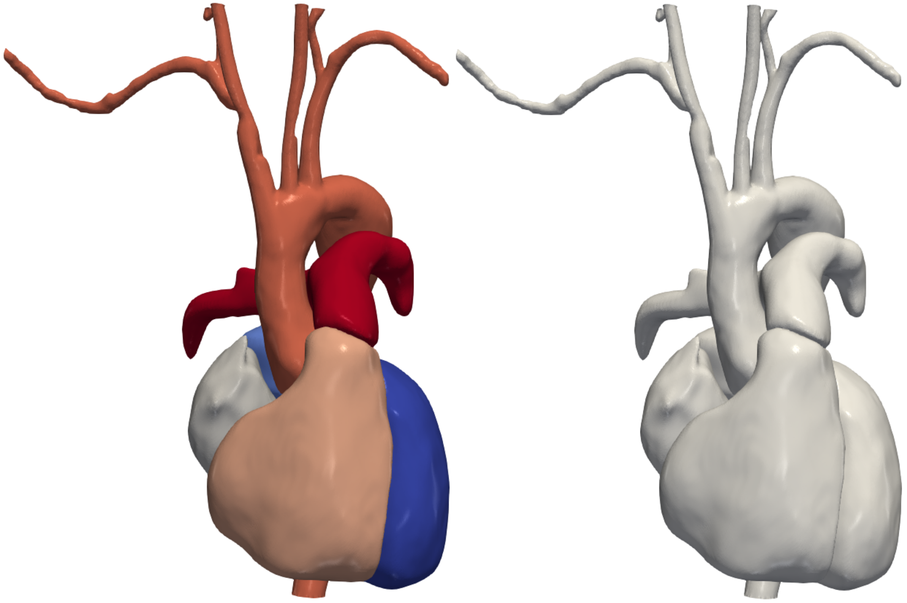

combining the models of the heart and the blood vessels into a single model for patient-specific simulations

The goal of this research project is to develop an automatic pipeline that constructs simulation-ready meshes encompassing both the cardiac structures (heart chambers) and the associated vasculature (including the aorta and pulmonary arteries). By merging cardiac and vascular geometric modeling into a single workflow, the objective is to make the setup of complex simulations faster, more efficient, and more accessible. This integration aims to facilitate advanced medical research and clinical applications by providing comprehensive patient-specific cardiovascular simulations.
Patient-specific cardiac and vascular simulations are crucial for understanding cardiovascular diseases, treatment planning, and medical education. However, creating accurate geometric models of both cardiac and vascular structures from medical imaging data remains challenging and time-consuming. Traditionally, these structures are modeled separately, requiring manual intervention and expertise in image segmentation and modeling techniques. By merging cardiac and vascular geometric modeling into a unified pipeline, this research seeks to overcome these challenges and provide a more holistic approach to cardiovascular simulation. The integration of deep learning techniques, such as segmentation and deformation algorithms, offers promising avenues for automating and optimizing the modeling process, thereby enabling more efficient and accurate simulations.
Heart Localization: The heart is localized within a 3D medical image volume of the abdomen or torso using a deep learning segmentation technique. This process involves accurately identifying and segmenting the cardiac structures from surrounding anatomical features.
Heart Modeling: The heart chambers are modeled using a deep learning-based deformation technique known as LinFlowNet. This approach allows for the deformation of a heart template to fit the specific medical image data, resulting in a patient-specific representation of the cardiac anatomy.
Vascular Modeling: The vasculature is modeled using an automatic tracing and segmentation algorithm called SeqSeg. Unlike template-based approaches, SeqSeg assembles the vasculature geometry piece by piece, leveraging seed points for initialization.
Initializing Vascular Tracing: To initialize the tracing process for the vasculature, the cardiac model predicted by LinFlowNet is post-processed. Specifically, the aortic valve region is located on the model to produce a seed point, vessel size estimate, and direction for tracing.
Combining Resulting Models: Finally, the resulting cardiac and vascular models are combined into a single cohesive representation. This integration allows for the seamless interaction between cardiac and vascular structures, enabling comprehensive cardiovascular simulations.
By implementing these methods, the research aims to establish an automatic pipeline for merging cardiac and vascular geometric modeling, ultimately facilitating faster and more accurate patient-specific cardiovascular simulations.